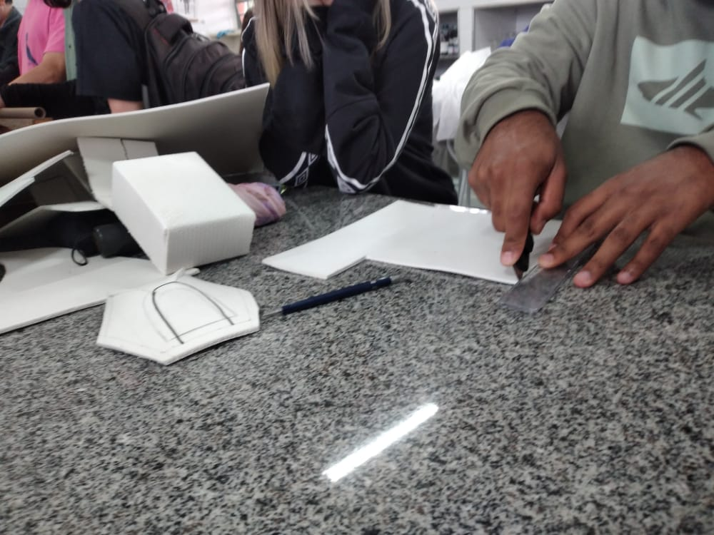
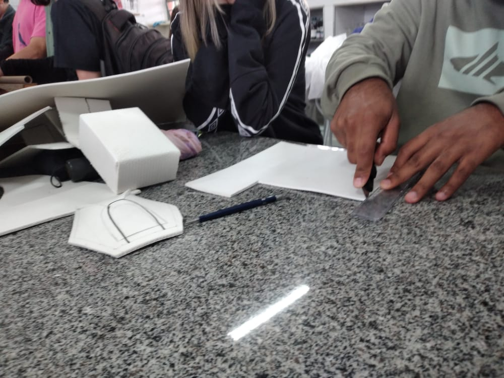

Cosplay.
Tecnologia.
Inovação.
Vercel combines the best developer experience with an obsessive focus on end-user performance. Our platform enables frontend teams to do their best work.
Explorar a eletiva
1 CosplayDas telas para o ao vivo
Nada pode ficar no papel, e as aulas práticas nos provou que isso é verdade. Trazer uma ideia do papel para a realidade pode parecer simples, mas é um processo que envolve muita criatividade e trabalho em equipe.
Sem as competências de trabalho em equipe, o projeto com certeza não andaria para frente, mas isso não ocorreu. Durante as aulas, foi possível que todos estavam envolvidos no projeto, e isso foi muito bom para todos.


.jpeg)
.jpeg)
O trabalho em equipe
Durante a eletiva, ambos alunos contribuem um com o outro entre si, a fim de realizar projetos
Dos desenhos para a tela
A eletiva Cosplay trás os super-heróis mais famosos para o ao vivo, construindo roupas, juntamente com a equipe de adereços e demais equipes
A criatividade da a vida
A criatividade é a alma dos projetos, em nossa eletiva, é possível ver ideias surgidas pelos próprios alunos, a fim de construir projetos além
A tecnologia anda conosco
2 TecnologiaTecnologia é a alma
Durante as aulas, foram utilizados equipamentos tecnologicos como TV, e softwares de edições, 3D, entre outros. Em especial foi utilizado o Google como fonte de pesquisa, que enriqueceu o projeto de conhecimento.
 

Mão na massa
90% das aulas da eletiva foram compostas por aulas práticas, da qual aprendemos a fazer roupas, adereços, e demais equipamentos
e também
3 InovaçãoA criatividade em primeiro lugar
A criatividade é capaz de criar coisas incríveis. E isso aconteceu na eletiva Cosplay, em que os alunos tem a total liberdade de darem ideias, e propor projetos que sejam inovadores.
Muitos alunos dos demais grupos tiveram essa liberdade e com isso conseguiram criar coisas além do escopo do projeto, bem como este site que você esta acessando, do qual programado em HTML5 e CSS criado pelo grupo de adereços